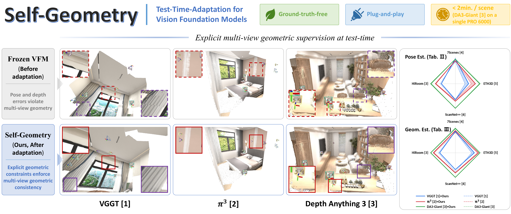
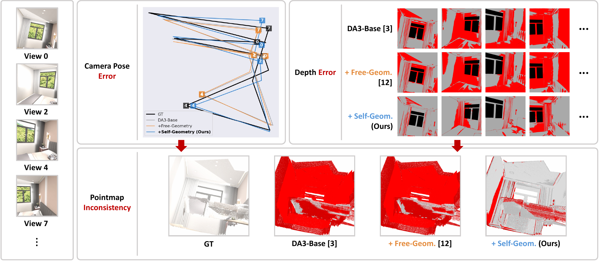
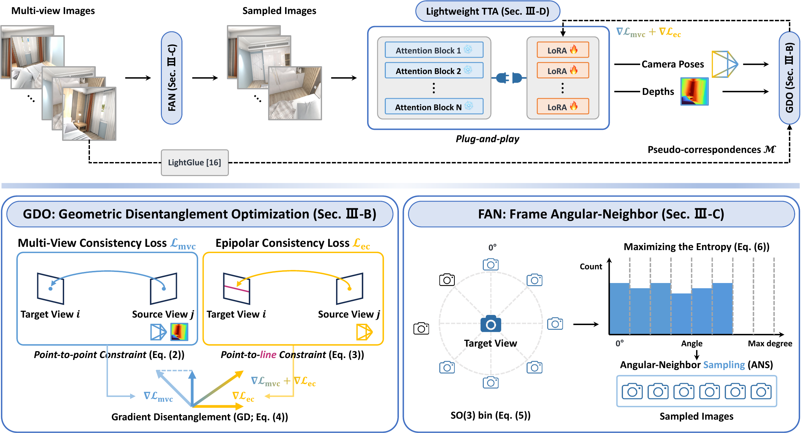
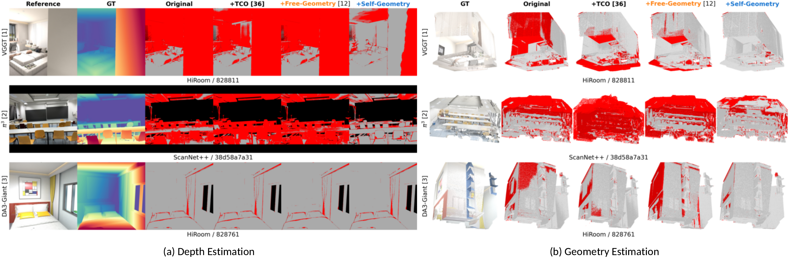

Loading video...
Self-Geometry
GT-Free and Plug-and-Play Test-Time Adaptation for Geometrically Consistent 3D Vision Foundation Models
†Corresponding Authors
Self-Geometry is a GT-free and plug-and-play test-time adaptation pipeline that imposes explicit multi-view geometric constraints on pretrained 3D VFMs (VGGT, π3, DA3) by using 2D pixel correspondences as pseudo GT. It delivers consistent improvements in both Pose Estimation and Geometry Estimation across six VFMs and four benchmarks within two minutes per-scene.
Recent Vision Foundation Models (VFMs) predict depth, camera pose, and pointmap in a single forward pass without per-scene optimization, achieving strong generalization. However, enforcing explicit multi-view geometric consistency, e.g., through bundle adjustment, is computationally costly and is thus not imposed during VFM pretraining, so such inconsistency can arise. To address this, implicit self-consistency derived from model outputs (e.g., pointmaps, features), though enforced at test-time in prior work, delivers inherently limited performance gain, especially on scenes where the pretrained VFM is highly inaccurate. In contrast to this implicit signal, we propose Self-Geometry, a plug-and-play test-time adaptation pipeline that directly imposes explicit multi-view geometric constraints using 2D pixel correspondences as pseudo ground-truth. Our proposed Self-Geometry consists of Geometric Disentanglement Optimization, which combines Multi-View Consistency and Epipolar Consistency losses with Gradient Disentanglement to prevent gradient conflict; Frame Angular-Neighbor, a view sampler based on SO(3) geodesic distances for lightly imposing these constraints; and Lightweight TTA, which adapts VFMs via LoRA. Our method achieves consistent improvements in both pose and geometry estimation across six VFMs (VGGT, π3, DA3-Giant/Large/Base/Small) and four benchmarks (7Scenes, ETH3D, ScanNet++, HiRoom).

Drag the slider to compare each pretrained VFM's baseline reconstruction against the one adapted by our Self-Geometry. Top row: pointmaps. Bottom row: depth maps.
Existing implicit self-consistency methods barely improve where the pretrained VFM is most inaccurate. We adapt the model with explicit multi-view geometric constraints instead.

Self-Geometry adapts a frozen pretrained VFM to a target scene through three complementary components: GDO, FAN, and Lightweight TTA.

Combines the point-to-point MVC Loss (supervises pose & depth jointly) and the depth-independent point-to-line EC Loss (supervises pose alone), then applies Gradient Disentanglement to prevent the gradient conflict that can arise between the two losses on the camera poses.
An SO(3)-guided view sampler that selects the target view maximizing SO(3)-bin entropy (Geometry-Rich View Selection) using scene-scale-invariant SO(3) geodesic distances, achieving uniform scene coverage.
Inserts LoRA only into the QKV weights of the pretrained VFM's attention blocks. The pretrained parameters remain frozen and only LoRA is updated, completing per-scene adaptation within two minutes on a single NVIDIA RTX PRO 6000.
Across six pretrained VFMs (VGGT, π3, DA3-Giant/Large/Base/Small) and four benchmarks (7Scenes, ETH3D, ScanNet++, HiRoom), our proposed Self-Geometry outperforms Free-Geometry and TCO on most Mean columns and achieves the largest Mean improvements over the frozen baselines in both Pose and Geometry Estimation.
| Method | 7Scenes | ETH3D | ScanNet++ | HiRoom | Mean | |||||
|---|---|---|---|---|---|---|---|---|---|---|
| AUC@3 ↑ | AUC@30 ↑ | AUC@3 ↑ | AUC@30 ↑ | AUC@3 ↑ | AUC@30 ↑ | AUC@3 ↑ | AUC@30 ↑ | AUC@3 ↑ | AUC@30 ↑ | |
| VGGT | ||||||||||
| VGGT | 0.25 | 0.86 | 0.20 | 0.76 | 0.56 | 0.94 | 0.51 | 0.88 | 0.38 | 0.86 |
| VGGT-TCO | 0.26 +4.3% | 0.86 +0.3% | 0.17 -12.2% | 0.72 -5.4% | 0.43 -21.9% | 0.92 -1.7% | 0.42 -18.4% | 0.86 -1.7% | 0.32 -15.2% | 0.84 -2.0% |
| VGGT-Fr | 0.25 -0.2% | 0.86 0.0% | 0.20 +3.9% | 0.77 +1.1% | 0.56 +0.1% | 0.94 0.0% | 0.54 +4.8% | 0.89 +1.8% | 0.39 +2.1% | 0.86 +0.7% |
| VGGT-Ours | 0.28 +13.9% | 0.87 +1.1% | 0.27 +37.3% | 0.83 +9.2% | 0.54 -2.9% | 0.94 0.0% | 0.47 -8.2% | 0.85 -3.4% | 0.39 +3.3% | 0.87 +1.4% |
| π3 | ||||||||||
| π3 | 0.26 | 0.86 | 0.33 | 0.86 | 0.55 | 0.94 | 0.65 | 0.94 | 0.45 | 0.90 |
| π3-TCO | 0.02 -90.5% | 0.42 -51.3% | 0.09 -72.0% | 0.60 -30.2% | 0.02 -96.0% | 0.63 -32.5% | 0.01 -97.8% | 0.51 -46.1% | 0.04 -91.5% | 0.54 -40.0% |
| π3-Fr | 0.26 -0.3% | 0.86 0.0% | 0.32 -3.4% | 0.85 -0.1% | 0.45 -18.4% | 0.93 -1.3% | 0.63 -2.1% | 0.95 +0.6% | 0.41 -7.1% | 0.90 -0.2% |
| π3-Ours | 0.26 -1.5% | 0.86 +0.3% | 0.41 +25.1% | 0.90 +5.0% | 0.60 +8.8% | 0.95 +1.6% | 0.67 +3.4% | 0.95 +0.8% | 0.48 +8.3% | 0.92 +1.9% |
| DA3-Giant | ||||||||||
| DA3-G | 0.27 | 0.87 | 0.49 | 0.91 | 0.85 | 0.98 | 0.80 | 0.96 | 0.60 | 0.93 |
| DA3-G-TCO | 0.28 +1.6% | 0.87 +0.1% | 0.50 +2.5% | 0.92 +1.0% | 0.84 -1.3% | 0.98 -0.2% | 0.81 +1.6% | 0.96 +0.1% | 0.61 +0.8% | 0.93 +0.2% |
| DA3-G-Fr | 0.28 +0.8% | 0.87 +0.1% | 0.52 +7.9% | 0.92 +1.1% | 0.85 +0.2% | 0.98 0.0% | 0.82 +1.9% | 0.98 +1.7% | 0.62 +2.4% | 0.94 +0.7% |
| DA3-G-Ours | 0.27 0.0% | 0.87 0.0% | 0.50 +3.4% | 0.91 -0.2% | 0.84 -1.0% | 0.98 -0.1% | 0.83 +3.5% | 0.96 +0.4% | 0.61 +1.5% | 0.93 +0.1% |
| DA3-Large | ||||||||||
| DA3-L | 0.29 | 0.86 | 0.32 | 0.87 | 0.56 | 0.94 | 0.59 | 0.94 | 0.44 | 0.90 |
| DA3-L-TCO | 0.30 +2.6% | 0.86 +0.1% | 0.31 -3.7% | 0.87 -0.2% | 0.54 -2.9% | 0.94 -0.3% | 0.62 +5.0% | 0.95 +0.6% | 0.44 +0.5% | 0.90 +0.1% |
| DA3-L-Fr | 0.29 +0.4% | 0.86 -0.1% | 0.36 +13.3% | 0.88 +1.6% | 0.56 +0.9% | 0.94 +0.1% | 0.58 -1.0% | 0.94 +0.1% | 0.45 +2.5% | 0.91 +0.4% |
| DA3-L-Ours | 0.29 -0.3% | 0.86 -0.1% | 0.32 -1.5% | 0.87 -0.2% | 0.56 0.0% | 0.94 0.0% | 0.62 +5.6% | 0.94 +0.4% | 0.45 +1.6% | 0.90 0.0% |
| DA3-Base | ||||||||||
| DA3-B | 0.21 | 0.82 | 0.15 | 0.75 | 0.20 | 0.81 | 0.19 | 0.83 | 0.19 | 0.80 |
| DA3-B-TCO | 0.22 +1.0% | 0.83 +0.7% | 0.16 +5.0% | 0.76 +1.4% | 0.20 +0.8% | 0.81 -0.4% | 0.20 +3.9% | 0.84 +0.6% | 0.19 +2.5% | 0.81 +0.6% |
| DA3-B-Fr | 0.21 -2.0% | 0.82 -0.2% | 0.18 +19.9% | 0.77 +2.9% | 0.21 +1.7% | 0.81 +0.8% | 0.17 -12.3% | 0.83 -0.8% | 0.19 +0.8% | 0.81 +0.6% |
| DA3-B-Ours | 0.22 +1.2% | 0.83 +0.4% | 0.16 +9.8% | 0.75 +0.9% | 0.21 +2.2% | 0.81 +0.2% | 0.29 +54.8% | 0.87 +4.4% | 0.22 +16.6% | 0.81 +1.5% |
| DA3-Small | ||||||||||
| DA3-S | 0.15 | 0.78 | 0.09 | 0.62 | 0.09 | 0.68 | 0.09 | 0.75 | 0.10 | 0.71 |
| DA3-S-TCO | 0.15 +5.6% | 0.79 +0.4% | 0.09 +2.4% | 0.62 -0.3% | 0.08 -9.0% | 0.66 -3.1% | 0.10 +4.4% | 0.76 +0.9% | 0.11 +1.5% | 0.71 -0.5% |
| DA3-S-Fr | 0.15 +2.4% | 0.78 0.0% | 0.10 +19.5% | 0.66 +6.4% | 0.09 +1.9% | 0.70 +1.9% | 0.09 -5.6% | 0.74 -1.3% | 0.11 +4.0% | 0.72 +1.5% |
| DA3-S-Ours | 0.14 -2.4% | 0.79 +1.0% | 0.09 +8.3% | 0.64 +3.6% | 0.09 0.0% | 0.69 +0.3% | 0.16 +64.8% | 0.79 +5.6% | 0.12 +15.6% | 0.73 +2.6% |
Table II. Pose Estimation results (AUC@3, AUC@30 ↑) on 7Scenes, ETH3D, ScanNet++, HiRoom, and Mean. Each pretrained model appears in four consecutive rows: the baseline and three adapted variants with suffix “-TCO” (TCO), “-Fr” (Free-Geometry), and “-Ours” (Self-Geometry). Δ% vs. baseline in parentheses; green = gain, red = degradation.
| Method | 7Scenes | ETH3D | ScanNet++ | HiRoom | Mean | |||||
|---|---|---|---|---|---|---|---|---|---|---|
| w/o p. ↑ | w/ p. ↑ | w/o p. ↑ | w/ p. ↑ | w/o p. ↑ | w/ p. ↑ | w/o p. ↑ | w/ p. ↑ | w/o p. ↑ | w/ p. ↑ | |
| VGGT | ||||||||||
| VGGT | 0.43 | 0.37 | 0.52 | 0.43 | 0.60 | 0.40 | 0.60 | 0.68 | 0.54 | 0.47 |
| VGGT-TCO | 0.44 +3.1% | 0.39 +4.9% | 0.49 -4.6% | 0.40 -7.9% | 0.48 -19.8% | 0.36 -10.1% | 0.44 -26.5% | 0.51 -24.8% | 0.46 -13.4% | 0.41 -12.0% |
| VGGT-Fr | 0.43 +0.4% | 0.37 +1.1% | 0.50 -4.3% | 0.44 +1.1% | 0.59 -1.0% | 0.41 +1.2% | 0.63 +6.0% | 0.67 -0.6% | 0.54 +0.4% | 0.47 +0.5% |
| VGGT-Ours | 0.44 +3.3% | 0.38 +4.6% | 0.60 +16.5% | 0.47 +9.3% | 0.54 -10.6% | 0.41 +2.5% | 0.55 -7.5% | 0.64 -4.9% | 0.53 -0.4% | 0.48 +1.8% |
| π3 | ||||||||||
| π3 | 0.42 | 0.58 | 0.70 | 0.79 | 0.63 | 0.77 | 0.74 | 0.83 | 0.62 | 0.74 |
| π3-TCO | 0.17 -60.1% | 0.15 -75.0% | 0.48 -31.5% | 0.44 -44.3% | 0.24 -62.1% | 0.34 -55.8% | 0.11 -84.9% | 0.15 -81.6% | 0.25 -60.0% | 0.27 -63.7% |
| π3-Fr | 0.43 +3.1% | 0.58 +0.5% | 0.71 +1.0% | 0.80 +0.2% | 0.51 -19.6% | 0.77 +0.1% | 0.62 -17.1% | 0.81 -2.6% | 0.56 -9.3% | 0.74 -0.6% |
| π3-Ours | 0.46 +10.5% | 0.57 -1.0% | 0.74 +5.9% | 0.81 +2.6% | 0.65 +2.2% | 0.79 +3.4% | 0.77 +3.8% | 0.84 +1.3% | 0.65 +5.1% | 0.76 +1.7% |
| DA3-Giant | ||||||||||
| DA3-G | 0.49 | 0.56 | 0.79 | 0.87 | 0.78 | 0.80 | 0.86 | 0.95 | 0.73 | 0.80 |
| DA3-G-TCO | 0.51 +3.1% | 0.59 +5.5% | 0.79 +0.3% | 0.87 +0.1% | 0.76 -2.8% | 0.80 -0.1% | 0.84 -2.0% | 0.94 -1.3% | 0.73 -0.7% | 0.80 +0.6% |
| DA3-G-Fr | 0.51 +2.2% | 0.56 -0.9% | 0.79 +0.6% | 0.87 -0.7% | 0.78 -0.1% | 0.80 0.0% | 0.86 +0.7% | 0.94 -1.4% | 0.74 +0.7% | 0.79 -0.8% |
| DA3-G-Ours | 0.51 +2.8% | 0.57 +1.5% | 0.78 -0.2% | 0.87 +0.1% | 0.79 +0.4% | 0.81 +0.5% | 0.87 +1.2% | 0.95 -0.5% | 0.74 +0.9% | 0.80 +0.3% |
| DA3-Large | ||||||||||
| DA3-L | 0.51 | 0.48 | 0.69 | 0.75 | 0.69 | 0.76 | 0.69 | 0.88 | 0.65 | 0.72 |
| DA3-L-TCO | 0.51 -0.7% | 0.48 +1.3% | 0.68 -1.4% | 0.75 0.0% | 0.65 -5.5% | 0.76 -0.9% | 0.74 +7.5% | 0.83 -5.2% | 0.65 0.0% | 0.71 -1.6% |
| DA3-L-Fr | 0.53 +3.5% | 0.48 -0.5% | 0.68 -2.7% | 0.76 +0.8% | 0.69 +0.6% | 0.76 0.0% | 0.57 -17.3% | 0.77 -12.5% | 0.62 -4.5% | 0.69 -3.7% |
| DA3-L-Ours | 0.51 +0.4% | 0.47 -1.3% | 0.69 -1.1% | 0.75 +0.1% | 0.69 +0.5% | 0.76 +0.1% | 0.72 +4.3% | 0.88 -0.1% | 0.65 +1.1% | 0.72 -0.2% |
| DA3-Base | ||||||||||
| DA3-B | 0.50 | 0.50 | 0.49 | 0.66 | 0.48 | 0.67 | 0.23 | 0.72 | 0.42 | 0.64 |
| DA3-B-TCO | 0.48 -3.8% | 0.51 +2.6% | 0.49 -0.2% | 0.68 +2.7% | 0.44 -7.5% | 0.67 -0.1% | 0.26 +11.3% | 0.65 -9.7% | 0.42 -1.8% | 0.63 -1.5% |
| DA3-B-Fr | 0.49 -2.0% | 0.50 -0.5% | 0.50 +1.3% | 0.66 -0.2% | 0.48 +1.2% | 0.68 +0.5% | 0.19 -18.4% | 0.68 -5.4% | 0.41 -2.4% | 0.63 -1.5% |
| DA3-B-Ours | 0.50 +0.2% | 0.50 -0.8% | 0.50 +1.9% | 0.67 +0.8% | 0.48 +0.2% | 0.67 +0.3% | 0.43 +85.2% | 0.72 +0.4% | 0.48 +12.2% | 0.64 +0.3% |
| DA3-Small | ||||||||||
| DA3-S | 0.39 | 0.47 | 0.37 | 0.64 | 0.33 | 0.53 | 0.18 | 0.51 | 0.32 | 0.54 |
| DA3-S-TCO | 0.39 -1.1% | 0.47 +0.7% | 0.38 +2.0% | 0.66 +3.1% | 0.30 -7.9% | 0.53 -0.9% | 0.21 +13.8% | 0.42 -17.6% | 0.32 +0.2% | 0.52 -3.4% |
| DA3-S-Fr | 0.41 +4.5% | 0.47 -0.1% | 0.49 +31.5% | 0.64 +1.3% | 0.33 +0.8% | 0.53 -0.2% | 0.16 -12.1% | 0.51 -0.8% | 0.35 +9.1% | 0.54 +0.1% |
| DA3-S-Ours | 0.38 -2.1% | 0.47 +1.4% | 0.41 +11.0% | 0.65 +2.1% | 0.34 +4.4% | 0.53 +0.4% | 0.31 +70.4% | 0.55 +7.0% | 0.36 +13.9% | 0.55 +2.7% |
Table III. Geometry Estimation results (F1-score ↑) under unposed
(w/o p.) and posed (w/ p.) modes on the same four benchmarks.
Same row layout as Table II.
Static side-by-side comparison across representative scenes. Compared with Original, TCO, and Free-Geometry, our proposed Self-Geometry substantially reduces error regions in both depth error maps and fused pointclouds.

@article{youn2026selfgeometry,
title = {Self-Geometry: GT-Free and Plug-and-Play Test-Time Adaptation
for Geometrically Consistent 3D Vision Foundation Models},
author = {Seokhyun Youn and Dahyeon Kye and Sung-Ho Bae and Jihyong Oh},
journal = {arXiv preprint arXiv:xxxx.xxxxx},
year = {2026}
}